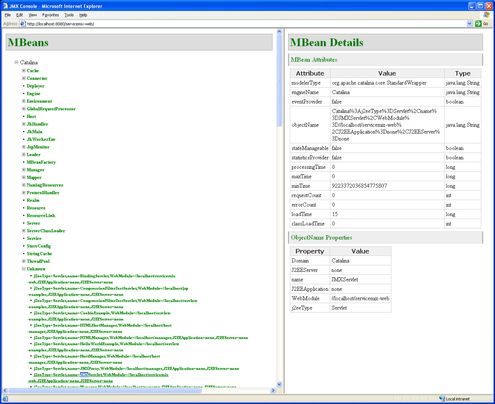

Tomcat Integration
The following guide explains how to deploy ServiceMix 3.0.x on the Apache Tomcat application server. This guide provides instructions specifically for ServiceMix 3.0.x release. For ServiceMix ServiceMix 2.0.1 instructions, refer to Tomcat Integration for ServiceMix 2.0.1.
application server. This guide provides instructions specifically for ServiceMix 3.0.x release. For ServiceMix ServiceMix 2.0.1 instructions, refer to Tomcat Integration for ServiceMix 2.0.1.
Pre-Installation Requirements
- Java Developer Kit (JDK) 1.5.x or greater to run ServiceMix
- The JAVA_HOME environment variable must be set to the directory where the JDK is installed, e.g. c:\Program Files\Java\jdk1.5.xx.
- Maven 2.0.4 or greater (required when installing source or developer releases).
- Apache Tomcat version 5.5
- ServiceMix 3.0.x
The following platform was used to produce this deployment guide:
- Windows XP
- Tomcat 5.5
- Java 5
- ServiceMix 3.0
Deploying ServiceMix on Tomcat
Execute the following steps to deploy ServiceMix on Apache Tomcat. NOTE: This procedure will work on Unix platforms, as well as the Windows platform, with the appropriate substitutions, such as using the backslash ( / ) instead of the forward slash ( \ ).
- Apache Tomcat must be downloaded and installed. For instructions please see the Tomcat web site.
- By default, Tomcat uses port 8080. It is important to note if your Tomcat installation is on another port, such as port 80; this information will be used in a later step.
- Download the ServiceMix distribution. Please see the Getting Started guide for instructions.
- Create the WAR file:
cd [servicemix_install_dir]\examples\servicemix-web
mvn install
where servicemix_install_dir is the directory in which ServiceMix was downloaded and installed.
 | For ServiceMix 3.0
If you use ServiceMix 3.0, you need to modify the pom.xml file in the \examples\servicemix-web directory.
Lines 79-83 should be modified as following:
<dependency>
<groupId>org.mortbay.jetty</groupId>
<artifactId>jetty</artifactId>
</dependency>
For ServiceMix 3.0.1 or later, this step is not necessary. |
- To deploy the WAR file, servicemix-web-xxx.war, copy it to the Tomcat webapps directory. For example, on a Windows system:
cd [servicemix_install_dir]\examples\servicemix-web\target
copy servicemix-web-*.war [tomcat_install_dir]\webapps
where tomcat_install_dir is the directory in which Tomcat was installed.
- Start Tomcat if it was not already running
The output in the Tomcat console window should show ServiceMix starting. Output will be similar to the following:
INFO: Deploying web application archive servicemix-web-3.0-incubating.war
Sept. 29, 2006 19:49:40 org.apache.catalina.loader.WebappClassLoader validateJarFile
INFO: validateJarFile(c:\java-bin\apache-tomcat-5.5.20\webapps\servicemix-web-3.0-incubating\WEB-INF\lib\servlet-api-2.5-6.0.0rc4.jar) - jar not loaded. See Servlet Spec 2.3, section 9.7.2. Offending class: javax/servlet/Servlet.class
INFO - jetty - Logging to org.apache.servicemix.http.jetty.JCLLogger@628704 via org.apache.servicemix.http.jetty.JCLLogger
INFO - JBIContainer - ServiceMix 3.0-incubating JBI Container (ServiceMix) is starting
INFO - JBIContainer - For help or more informations please see: http:INFO - ConnectorServerFactoryBean - JMX connector available at: service:jmx:rmi:INFO - ComponentMBeanImpl - Initializing component: #SubscriptionManager#
INFO - DeploymentService - Restoring service assemblies
INFO - ComponentMBeanImpl - Initializing component: servicemix-http
INFO - ComponentMBeanImpl - Initializing component: echo
INFO - ComponentMBeanImpl - Initializing component: timer
INFO - SimpleThreadPool - Job execution threads will use class loader of thread: ContainerBackgroundProcessor[StandardEngine[Catalina]]
INFO - QuartzScheduler - Quartz Scheduler v.1.5.2 created.
INFO - RAMJobStore - RAMJobStore initialized.
INFO - StdSchedulerFactory - Quartz scheduler 'DefaultQuartzScheduler' initialized from default resource file in Quartz package: 'quartz.properties'
INFO - StdSchedulerFactory - Quartz scheduler version: 1.5.2
INFO - ComponentMBeanImpl - Initializing component: inputSender
INFO - ComponentMBeanImpl - Initializing component: inputReceiver
INFO - ComponentMBeanImpl - Initializing component: outputSender
INFO - ComponentMBeanImpl - Initializing component: jmsTrace
INFO - ComponentMBeanImpl - Initializing component: trace
ERROR - ClientFactory - Cound not start ClientFactory: javax.naming.NamingException: Context is read only.
INFO - QuartzScheduler - Scheduler DefaultQuartzScheduler_$_NON_CLUSTERED started.
INFO - JBIContainer - ServiceMix JBI Container (ServiceMix) started
 | ERROR - ClientFactory
The log will display an error. Do not worry, this error will not affect ServiceMix.
This will be fixed in a later release. |
Testing the ServiceMix Deployment on Tomcat
To ensure that ServiceMix is running on Tomcat, do any of the following:
- Check the Tomcat console output to confirm that the servicemix-web is starting without errors.
- Run the ServiceMix JMX Console. To do this, enter the following URL in a web browser: http://localhost:8080/servicemix-web-3.0-incubating/. Note: your installation of Tomcat may not be running on port 8080. If that is the case, replace 8080 with the correct port number in the previous URL.
Try using the JMX console. For example, perform the following steps. Note: this is optional.
- Click on "Catalina".
- Click on "Unknown".
- Click on the "JMXServlet WebModule" to get monitoring information about the JMX Servlet itself:

- An http binding example is supplied. To run the example program perform the following steps:
- From a browser, enter the URL http://localhost:8080/servicemix-web-3.0-incubating/examples. NOTE: If Tomcat is using a different port, such as port 80, substitute the correct port number for 8080 in the URL.

- Enter a name or some text in the text box (shown above) and click the Submit button. You will see: